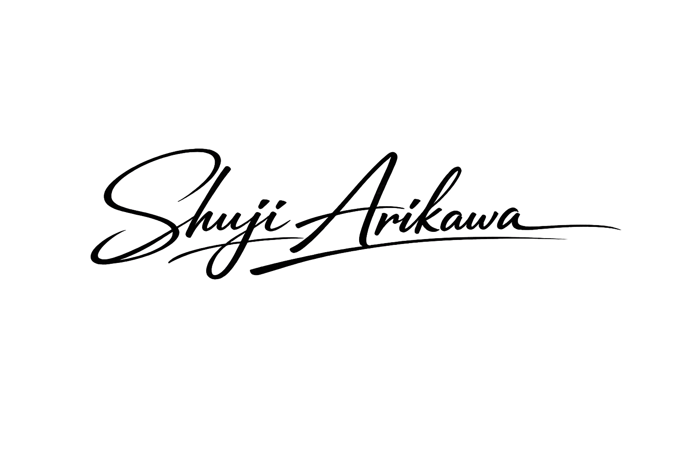

CEO / Founder
有川 秀治
BtoBマーケティングにおける「構造の断絶」に課題を感じ、マケマケを設立。年商1〜10億企業のブレイクスルーを多数支援。
努力を成果に変えるための、
「正しい地図」を渡したい。
「現場は毎日遅くまで頑張っているのに、CPAは一向に下がらない」
「いろいろな施策をつまみ食いしているが、点と点が線にならない」
私たちが日々お会いする経営者やマーケティング責任者の方々は、一様にこのような悩みを抱えています。そして多くの場合、彼らは自分たちの「努力不足」や「能力不足」を責めています。
断言します。問題はあなたの努力ではありません。
売上を生み出す「構造」そのものに欠陥があるのです。
どれだけ美しいWebサイトを作っても、市場の定義（誰に売るか）が間違っていればモノは売れません。どれだけ多額の広告費を投じても、LPのメッセージがズレていれば、穴の空いたバケツに水を注ぐようなものです。
マケマケは、この「市場・戦略・表現・導線」という4つのレイヤーを直列に繋ぎ直すプロフェッショナル集団です。
私たちは、小手先のテクニックや「必ずバズる」といった魔法は提供しません。データと論理に基づき、貴社が勝つための「構造設計」を愚直に行います。
私たちの提供価値は、納品物ではなく「事業の成長」そのものです。
だからこそ、条件を満たす企業様とはリスクを共有し、成果に連動するモデルも採用しています。
「なぜ自社の売上が止まっているのか」。
その疑問に対する明確な答えと、再び成長軌道に乗るための「正しい地図」をお渡しすることをお約束します。
株式会社マケマケ 代表取締役

マケマケが提供する、構造を再設計するための支援モデルはこちら